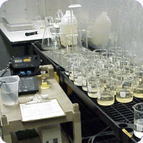
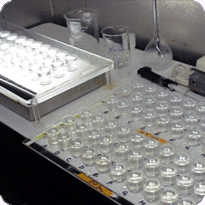
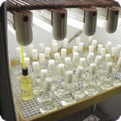
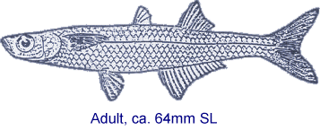
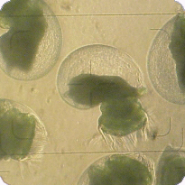

|
 | |  |
|
Chronic bioassays evaluate the toxicity of an NPDES effluent using "critical life stages" of test organisms. These may include the growth of larval fish, the germination of algae, the reproduction of water fleas, etc. Typically three different test species: a plant, an invertebrate, and a larval fish are tested initially. The most sensitive species may then be tested in monthly or quarterly testing. A wide variety of tests have been developed for both freshwater and saltwater discharges. The most commonly used of these tests are described in the following pages. The basic test protocol requires that each test species be exposed to a series of effluent dilutions for two to seven days. Solutions may or may not be renewed daily. Growth, development, reproduction and survival of the test organisms as well as various water quality parameters may be monitored throughout the test. Results from each of the effluent concentrations are then statistically compared to the control in order
to determine the "No Observable Effect Concentration (NOEC)". The NOEC is the highest test
concentration that is not statistically significantly different from the
Control. Other test end points may include such things as: LC50's, EC50's, or
IC25's. Definitions of these "point estimates" are given in the "Terminology"
section of this web site. One other commonly reported test result is the TUc, (Toxic
Units chronic), which is simply 100 divided by the NOEC (ie. a NOEC = 50%
would yield a TUc of 2 or 100/50).
Many times dischargers are allowed a
"dilution
allowance" related to how and where their effluent is discharged (see
"mixing zone" and "ZID" in the terminology page of this web site). Some chronic toxicity
is allowed within this "zone", but not pass its boundaries. The dilution
allowance is a calculation of the effluent concentration at the edge of the
mixing zone. Pass this point no toxicity is allowed (no toxicity is equivalent
to a TUc = 1). This dilution allowance is applied resulting in chronic toxicity permit limits greater then 1.0. Also, please be aware that some dischargers are not allowed a dilution allowance at all (TUc limit of 1.0), as in the case of many freshwater outfalls in southern California. It is very important to inform the
laboratory about any dlution allowances given. The dilution allowance may determine which effluent concentrations should be tested (useful to know prior to test initiation!).
|
Fresh water discharge into a fresh water or marine environment:
Fresh or salt water discharge into a marine environment:
|
| |
 | |  |
|  | |
|
EPA Test Method 1000.0
Fathead Minnow (Pimephales
promelas) Larval Survival and Growth Test
Protocol: EPA
600/4-89/001(second edition), EPA 600/4-91/002 (third edition)

This toxicity test
utilizes larvae from a very common fish, the fathead minnow, (Pimephales
promelas), found in lakes and streams throughout most of North America. Fish
used in our tests are cultured in our laboratory exclusively for toxicity
testing. Occasionally, on exceptionally large projects for instance, we may need
to purchase larvae from a qualified commercial supplier. Testing consists of
exposing 24 hour old larvae to an effluent dilution series, typically 100%, 50%,
25%, 12.5%, 6.2%, and a control, or in some cases to 100 % effluent only, for a period of 7 days. Four replicates of each dilution concentation are tested. Fish are fed twice
daily with newly hatched brine shrimp. The test is a static renewal type so test
solutions are changed daily to remove any uneaten food and fecal material. Fresh
samples are needed for the renewals on day 1, 3, and 5 if possible. Water quality parameters
such as dissolved oxygen (DO), pH, temperature and the number of mortalities are
taken and recorded on a daily basis. After seven days of growth, the fish are
removed from the test solutions, washed and dried overnight in a drying oven.
The following day, the dry weight of each replicate is
then measured to the nearest 0.00001 grams. The total number of mortalities and
mean dry weight in each concentration are then used to calculate endpoints such
as NOEC, LOEC, EC50, TUc, or percent
survival (in 100% effluent tests) utilizing the computer statistical package
"TOXCALC". As two test parameters were measured (survival rate and weight), two
sets of endpoints are usually reported.
| |
| | |
| | |
|
EPA Test Method 1002.0
Cladoceran (Ceriodaphnia
dubia) Survival and Reproduction Test
Protocol: EPA
600/4-89/001, EPA 600/4-91/002

This toxicity
test utilizes the cladoceran Ceriodaphnia dubia, a common "water
flea" found in many lakes and ponds throughout most of North America.
Ceriodaphnia used in our tests are cultured in our laboratory. Testing
consists of exposing 24 hour old neonates (babies)
to an effluent dilution series, typically 100%, 50%, 25%, 12.5%, 6.2%, and a
control, or in
some cases to 100% effluent only, for a period of 7 days. Neonates are placed
in individual test chambers and as they are "asexual" at this life stage, they
will begin having young of their own in about three to four days. Ten replicates of each dilution are tested. This is a static renewal type test so test solutions are changed daily. Fresh samples are
needed for the renewals on day 1, 3, and 5 if possible. Test organisms are fed at each
renewal. Water quality parameters such as dissolved oxygen (DO), pH, temperature
and the number of mortalities and young produced are taken and recorded on a
daily basis. Usually three broods of young are produced by each test organism
during the seven day course of this test. After seven days of exposure, the
total number of mortalities and the number of young produced in each
concentration are then used to calculate endpoints such as NOEC, LOEC, EC50, TUc, or
percent survival (in 100% effluent tests) utilizing the computer statistical
package "TOXCALC". As two test parameters were measured for this test (survival
rate and reproduction), two sets of endpoints are usually reported.
| |
| | |
| | |
|
EPA Test Method 1003.0
Algal (Selenastrum
capicornutum) Growth Test
Protocol: EPA 600/4-89/001, EPA
600/4-91/002
Selenastrum capricornutum is a common green,
unicellular algae found in waters of North America. The Selenastrum used
in our tests are cultured in our laboratory. Testing consists of inoculating
test chambers of an effluent dilution series, typically 100%, 50%, 25%, 12.5%,
6.2%, and a control, or in some cases to 100% effluent only, with a uniform
number of algal cells and allowing them to grow for a period of four days in a
static test. Four replicates of each dilution is tested.
Test chambers are kept in constant light in a specially equipped
incubator. Water quality parameters such as pH, temperature and alkalinity and
hardness are taken at the beginning of the test. After four days of exposure, direct algal cell counts are taken under the microscope of each test chamber. The direct cell counts are then used to calculate endpoints such as NOEC, LOEC, EC50, TUc, or percent difference (in 100% effluent tests) utilizing the
computer statistical package "TOXCALC".
| |
| | |
| | |
|
EPA Test Method 1006.0
Inland Silverside (Menidia
beryllina) Larval Survival and Growth Test
Protocol: EPA
600/4-87/028, EPA 600/4-91/003This toxicity test
utilizes larvae from a common estuarine fish, the inland silversides,
(Menidia beryllina), found along the Atlantic and Gulf coasts of the
United States. Fish used in our laboratory are purchased from a qualified commercial supplier. Testing
consists of exposing 7 to 1 1 day old larvae to an effluent dilution series, typically 100%, 50% , 25%, 12.5% , 6.2%, and a control, or in
some cases to 100 % effluent only, for a period of 7 days. Four replicates of each dilution are tested. Fish are fed twice
daily with newly hatched brine shrimp. The test is a static renewal type so test
solutions are changed daily to remove any uneaten food and fecal material. Fresh
samples are needed for the renewals on day 1, 3, and 5. Water quality parameters
such as dissolved oxygen (DO), pHs temperature and the number of mortalities are
taken and recorded on a daily basis. After seven days of growth, the fish are
removed from the test solutions, washed and dried overnight in a drying oven.
The following day, the dry weight of each replicate is
then measured to the nearest 0.00001 grams. The total number of mortalities and
mean dry weight in each concentration are then used to calculate endpoints such
as NOEC, LOEC, EC50, TUc, or percent
survival (in 100% effluent tests) utilizing the computer statistical package "
TOXCALC ". As two test parameters were measured (survival rate and weight), two
sets of endpoints are usually reported.
SUMMARY OF TEST
CONDITIONS AND TEST ACCEPTABILITY CRITERIA FOR THE INLAND SILVERSIDE, MENIDIA
BERYLLINA, LARVAL SURVIVAL AND GROWTH TEST WITH EFFLUENTS AND RECEIVING
WATERS | 1. Test type: | Static renewal |
| 2. Salinity: | 5 to 32 ppt (± 2 ppt of the selected test salinity) |
| 3. Temperature: | 25 ± loC |
| 4. Light quality: | Ambient laboratory illumination |
| 5. Light intensity: | 10-20 uE/m2/s (50-100 ft-c) (Ambient laboratory levels) |
| 6. Photoperiod: | 16 h light, 8 h darkness |
| 7. Test chamber size: | 600 mL - 1 L containers |
| 8. Test solution volume: | 500-750 mL/replicate (loading and DO restrictions must be met) |
| 9. Renewal of test solutions: | Daily |
| 10. Age of test organisms: | 7-11 days post hatch; 24-h range in age |
| 11. No. larvae per test chamber: | 15 (minimum of 10) |
| 12. No. replicate chambers per concentration: | 4 (minimum of 3) |
| 13. No. larvae per conc.: | 60 (minimum of 30) |
| 14. Source of food: | Newly hatched Artemia nauplii
(survival of 7-9 days old Menidia beryllina larvae improved by feeding
24 h old Artemia) |
| 15. Feeding regime: | Feed 0.10 g wet weight Artemia nauplii
per replicate on days 0-2; Feed 0.15 g
wet weight Artemia nauplii per
replicate on days 3-6 |
| 16. Cleaning: | Siphon daily, immediately before test
solution renewal and feeding |
| 17. Aeration: | None, unless DO concentration falls below 4.0 mg/L, then aerate all chambers Rate should be less than 100 bubbles/min. |
| 18. Dilution water: | Uncontaminated source of natural sea water, artificial seawater; deionized water mixed with hypersaline brine or artificial sea salts. |
| 19. Test concentrations: | Effluent: Minimum of 5 and a control Receiving Waters: 100% receiving water or minimum of 5 and a control |
| 20. Dilution factor: | Effluents: > 0.5 Receiving waters: None, or > 0.5 |
| 21. Test duration: | 7 days |
| 22. Endpoints: | Survival and growth (weight) |
| 23. Test acceptability criteria: | 80% or greater survival in controls, 0.50 mg average dry weight of control larvae where test starts with 7-days old larvae and dried immediately after test termination, or 0.43 mg or greater average dry weight per surviving control larvae, preserved not more than 7 days in 4% formalin or 70% ethanol |
| 24. Sampling requirement: | For on-site tests, samples collected daily, and used within 24 h of the time they are removed from the sampling device. For off-site tests, a minimum of three samples are collected on days one, three, and five with a maximum holding time of 36 h before first use.
| | 25. Sample volume required: | 6 L per day |

| |
| | |
| | |
|
Abalone Larval Development Short-Term Toxicity
Test
Protocol: CSWRCB 1990, EPA 600/R-95/136, CSWRCB
96-1WQ

This test utilizes larvae from the red abalone, Haliotis rufescens, common to the Pacific coast of North America. Adult abalone are purchased from a local supplier and maintained in our laboratory in a specially equipped refrigerated aquaria prior to testing.
Testing consists of exposing newly fertilized eggs to an effluent dilution series and a control for a period of 48 hours. Five replicates of each dilution concentration are tested. Water quality parameters such as dissolved oxygen (DO), pH, temperature are taken and recorded at the beginning and ending of the test. After 48 hours, the test is ended by adding glutaraldehyde to each test chamber. Test chambers are then examined under a microscope and the number of normally and abnormally developed larvae are counted by examining 100 to 200 organisms in each test chamber. The percent of normally developed larvae for each concentration is then used to calculate endpoints such as NOEC, LOEC, EC50, TUc, or significant difference (in 100% effluent tests) utilizing the
computer statistical package " TOXCALC ".
| |
| | |
| | |
|
Giant Kelp Germination and Growth Short-Term Toxicity
Test
Protocol: CSWRCB 1990, EPA 600/R-95/136, CSWRCB
96-1WQThis test utilizes spores
from the giant kelp, Macrocystis pylifera, common to the Pacific coast of
North America. The reproductive portion of the kelp, called sporophyll, are
located at the base of the plant and therefore must be collected by scuba
diving. According to the protocol, sporophyll must be used within 24 hours of
collection. We have found that we have better test results with freshly
collected sporophyll, so we send divers out the morning of the test to minimize
organism hold time. Testing consists of exposing newly released kelp spores to
an effluent dilution series and a control in a test
chamber containing a glass microscope slide. The spores settle to the bottom of
the test chamber, germinate and start to grow on the slides. Water quality
parameters such as dissolved oxygen (DO), pH, temperature are taken and recorded
at the beginning and ending of the test. After 48 hours, the test is ended by
adding glutaraldehyde to each test chamber. Test chamber slides are then
examined under a microscope and the number of germinated and non-germinated
spores are counted by examining 100 to 200 organisms on each glass slide. In
addition, the lengths of 10 randomly selected kelp germ tubes are measured using
a microscope micrometer. The percent of germination and mean germ tube lengths
for each concentration is then used to calculate endpoints such as NOEC, LOEC, EC50, TUc, or significant
difference (in 100% effluent tests) utilizing the computer statistical package
"TOXCALC". As two test parameters were measured (germination and growth), two
sets of endpoints are usually reported.
| |
| | |
| | |
|
Topsmelt 7-Day Larval Growth and Survival Toxicity
Test
Protocol: CSWRCB 1990, EPA 600/R-95/136, CSWRCB
96-1WQThis toxicity test utilizes larvae from a common West Coast fish, the
topsmelt, Atherinops affinis. Fish used in our tests are cultured in our
laboratory exclusively for toxicity testing. Testing consists of exposing 9 to
14 day old larvae to an effluent dilution series and a control for a
period of 7 days. Five replicates of each dilution concentration are tested. Fish are fed twice daily with newly hatched brine shrimp. The
test is a static renewal type so test solutions are changed every other day to
remove any uneaten food and fecal material. Fresh samples are needed for the
renewals on day 1, 3, and 5. Water quality parameters such as dissolved oxygen
(DO), pH, temperature and the number of mortalities are taken and recorded on a
daily basis. After seven days of growth, the fish are removed from the test
solutions, washed and dried overnight in a drying oven. The following day, the
dry weight of each replicate is then measured to the nearest 0.00001 grams. The total
number of mortalities and mean dry weight in each concentration are then used to
calculate endpoints such as NOEC, LOEC, EC50, TUc, or significant
survival (in 100% effluent tests) utilizing the computer statistical package "
TOXCALC ". As two test parameters were measured (survival rate and weight), two
sets of endpoints are usually reported.
| |
| | |
|